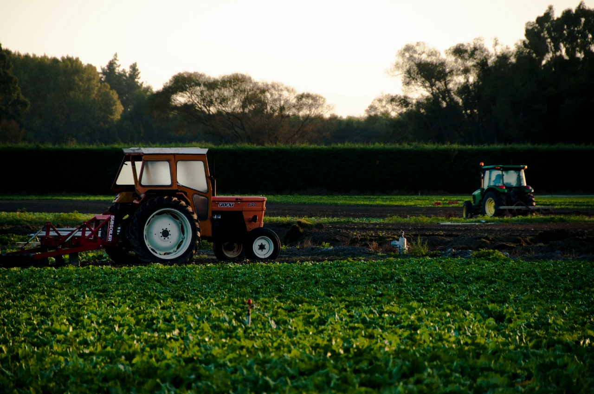

FARMER BUDDY
HOME
LOGIN
ADMIN
FARMER
OWNER
ABOUT US

Farmer
A farmer[1] (also called an agriculturer[citation needed]) is a person engaged in agriculture, raising living organisms for food or raw materials.
The term usually applies to people who do some combination of raising field crops, orchards, vineyards, poultry, or other livestock.
A farmer might own the farmed land or might work as a laborer on land owned by others,
but in advanced economies, a farmer is usually a farm owner, while employees of the farm are known as farm workers, or farmhands.
However, in the not so distant past, a farmer was a person who promotes or improves the growth of (a plant, crop, etc.) by labor and attention, land or crops or raises animals (as livestock or fish).
Sugar Factory
Sugarcane is the world's largest crop by production quantity,
with 1.8 billion tones produced in 2017, with Brazil accounting for 40% of the world war.
The Food and Agriculture organization estimated it was cultivated
on about 26 million hecters in more than 90 countries.
In our India also there are lot of Farmers are cultivate the sugarcane.
So we are here to provide the services for the farmers and keep trying to get
a good price for their products. so for joining us please contact us following mail or phone number...
The lifestyle of people is changing drastically, from online shopping to internet banking, online admissions to e-mark sheets, e-learning to e-certificates, websites to mobile applications, etc. Everything is computer based that people don’t have to physically relocate. They can access the things from any place, anywhere without worrying of time and availability. therefore we decide to make a system which is useful for farmers.